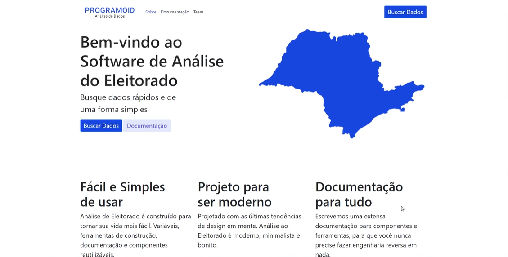
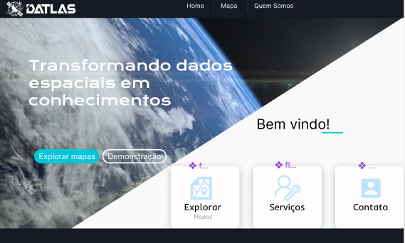
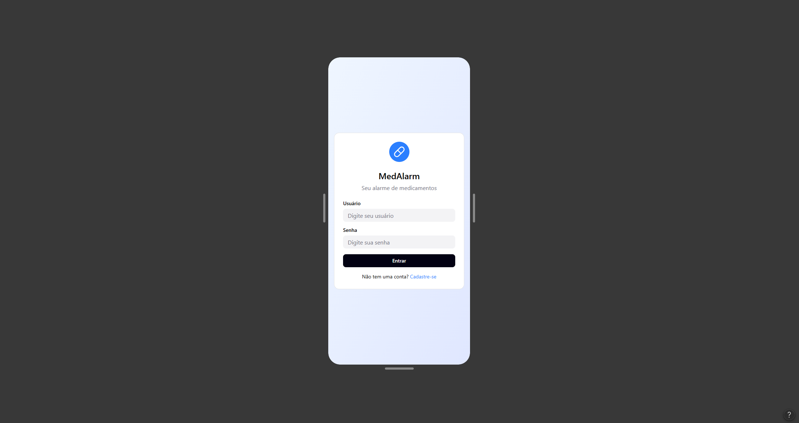

Veja os projetos em destaque

Programoid
Dashboard para visualização de dados eleitorais utilizando pandas
Datlas
Site com mapa interativo para mostrar dados de satelites de uma determinada região
MedAlarm
Aplicaão de IOT para controle de horarios para ministrar medicamentos